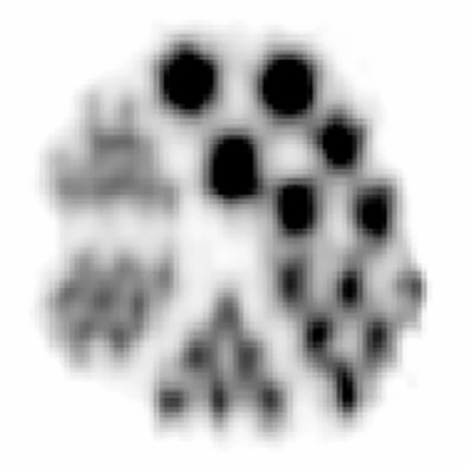
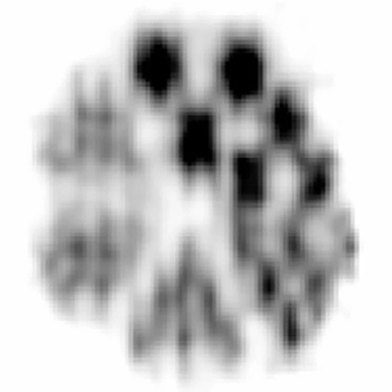
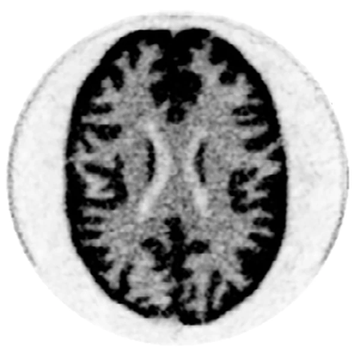
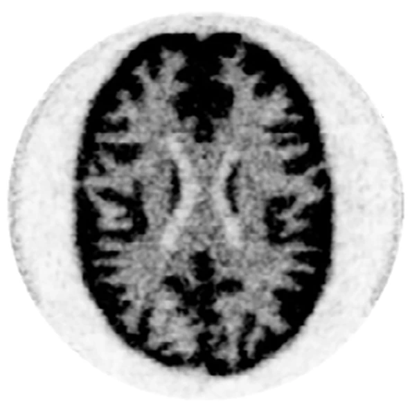

Scatter diffusion
A conditional DDPM with a U-Net backbone denoises an 8 × 8 Gaussian grid into the SiPM pattern of the first interaction, conditioned on the ICS pattern and block ID embeddings, and returns its deposited energy.
D3Recovery
†Corresponding author
XEILX-Ray & Emission Imaging Laboratory · Weill Cornell Medicine
Scanner experiments




Background Inter-crystal scattering (ICS) is a fundamental limitation in ultra-high resolution positron emission tomography (PET), particularly in light-sharing detectors with small crystal elements, where frequent Compton scatter across neighboring crystals obscures the initial interaction position and degrades the spatial resolution, image contrast, and quantitative accuracy. In our previous work, a convolutional neural network, Recovery-Net, was proposed and evaluated to recover the crystal location and depth-of-interaction (DOI) of the initial interaction in a light-sharing depth-encoding Prism-PET detector using Monte Carlo (MC) simulations.
Purpose This work aims to develop and experimentally validate a scanner-level ICS recovery framework for a light-sharing depth-encoding Prism-PET prototype scanner using a diffusion model.
Methods We first developed a novel method to prepare the training dataset by combining scanner-level simulations with experimental measurements. The resulting dataset comprises an 8 × 8 array of silicon photomultiplier (SiPM) signals for each ICS event with associated ground-truth information, including crystal location, DOI, and deposited energy of the initial interaction. Using the SiPM signal patterns as input, we proposed a new diffusion-driven and physics-informed tripartite framework, named D3Recovery, to estimate the 3D position and deposited energy of the initial interaction. The previously proposed Recovery-Net was also implemented and evaluated for comparison. An ultra-micro Derenzo phantom and a 3D Hoffman brain phantom from the Prism-PET prototype scanner experiment were used to evaluate the impact of ICS recovery on image quality.
Results Recovery-Net and D3Recovery achieved crystal identification accuracies of 64.1% and 70.1% for ICS events, respectively, with D3Recovery further improving DOI estimation to a full width at half maximum (FWHM) of 3.6 mm compared with 5.1 mm for Recovery-Net. Compared with center-of-gravity (CoG) positioning, D3Recovery reduced the mean crystal localization error from 2.18 mm to 0.99 mm and recovered the deposited energy with an error FWHM of 34.0 keV. For the ultra-micro Derenzo phantom images, Recovery-Net and D3Recovery increased peak-to-valley ratios by 13% and 24% for ICS events and by 14% and 17% for all events, respectively. For the Hoffman brain phantom, Recovery-Net and D3Recovery reduced mean absolute error (MAE) by 15.53% and 17.84% for ICS events and by 16.22% and 18.63% for all events, while increasing structural similarity index measure (SSIM) by 14.59% and 15.60% for ICS events and by 4.60% and 4.75% for all events, respectively. In addition, standard deviation (SD) measured in a uniform region decreased by 12.56% and 20.88% for ICS events, and by 5.26% and 8.48% for all events with Recovery-Net and D3Recovery, respectively.
Conclusions Experimental results demonstrate that D3Recovery significantly improves crystal localization, DOI estimation, and reconstructed image quality in high-resolution PET with small-crystal, light-sharing detectors, while providing a practical scanner-level training dataset acquisition strategy for experimental deployment of AI-based ICS recovery. By retaining a large fraction (~70% in our case) of otherwise discarded coincidences, our results show that we achieve a favorable resolution-sensitivity balance that is most beneficial in count-limited, low-dose imaging.
Captions appear here as the talk plays
Motivation
Each Prism-PET detector module couples a 16 × 16 array of 1.5 × 1.5 × 20 mm3 LYSO crystals to an 8 × 8 SiPM array, with a prismatoid light guide that shares scintillation light between neighboring crystals so that depth of interaction (DOI) can be read out from a single end. At 511 keV, Compton scatter dominates in LYSO, so many photons deposit energy in more than one crystal. In our phantom scans, 71 to 72% of coincidences contained at least one inter-crystal scatter (ICS) event.
Center-of-gravity (CoG) positioning averages the light from all interaction sites, which assigns an ICS event to an averaged or wrong crystal and mispositions its line of response. Rejecting ICS events avoids the blur but discards most of the counts. We instead recover the first interaction, the one that defines the true line of response.
Method · Training data
Supervised ICS recovery needs the true first interaction of every training event, which a measurement alone cannot provide. Labeling it experimentally would mean irradiating each of the 10,240 crystals in the scanner with a pencil beam at every depth. We avoid that with a hybrid pipeline.
The result is about 136 million ICS events whose inputs carry real detector response while their labels come from simulation.
Method · Model
The walkthrough at the top of the page follows one ICS event through all three models. Stage 1 does the hardest part. It has to pull the pattern of the first interaction out of a pattern where several interactions overlap, and a diffusion model can represent that ambiguity where a deterministic network would average it away.
Watch the diffusion model turn Gaussian noise into the first-interaction SiPM pattern for example ICS events. Pick an event and scrub through the denoising steps.
Each panel uses its own color scale (viridis). Stage 1 is not always right, which is why Stage 2 looks at both the recovered and the original ICS pattern.
Results
Results · Test events
On held-out ICS events, D3Recovery identifies the correct crystal 70.1% of the time, against 22.8% for CoG and 64.1% for Recovery-Net, and narrows the DOI error distribution from 5.1 mm to 3.6 mm FWHM, about a 29% reduction. The mean crystal localization error falls from 2.18 ± 1.99 mm with CoG and 1.16 ± 2.09 mm with Recovery-Net to 0.99 ± 1.98 mm, and the deposited energy of the first interaction is recovered with an error FWHM of 34.0 keV.
| Region | Share of events (%) | Crystal ID accuracy (%) ↑ | DOI FWHM (mm) ↓ | |||
|---|---|---|---|---|---|---|
| CoG | Recovery-Net | D3Recovery | Recovery-Net | D3Recovery | ||
| Center | 86.1 | 23.5 | 65.0 | 70.8 | 4.9 | 3.5 |
| Edge | 7.7 | 18.4 | 62.9 | 69.9 | 6.7 | 4.6 |
| Corner | 6.2 | 19.4 | 53.0 | 60.0 | 7.2 | 4.9 |
| All | 100.0 | 22.8 | 64.1 | 70.1 | 5.1 | 3.6 |
Stage 2 reads both the recovered and the original pattern, so it can still land on the right crystal when Stage 1 is off. We also show the rarer failure cases.
Results · Scanner experiments
We filled the phantom (rods from 0.80 to 2.50 mm) with 2 mCi of 18F-FDG and scanned it for 6 hours on the Prism-PET prototype, collecting 171 million coincidences of which 72% contained at least one ICS event. Images were reconstructed with CASToR (30 iterations, 10 subsets, 0.25 mm voxels). Compared with no recovery, Recovery-Net and D3Recovery raise the average peak-to-valley ratio by 13% and 24% for ICS events and by 14% and 17% for all events.
| Rod diameter (mm) | PE events | ICS events | All events | ||||
|---|---|---|---|---|---|---|---|
| w/o Recovery | Recovery-Net | D3Recovery | w/o Recovery | Recovery-Net | D3Recovery | ||
| 2.50 | 38.90 | 7.25 | 7.98 | 8.30 | 15.55 | 16.04 | 16.76 |
| 2.00 | 6.97 | 1.73 | 2.43 | 2.90 | 3.20 | 4.15 | 4.24 |
| 1.50 | 6.24 | 1.68 | 1.76 | 1.97 | 3.29 | 3.46 | 3.50 |
| 1.25 | 9.96 | 1.73 | 2.05 | 2.17 | 3.71 | 4.07 | 4.28 |
| 1.00 | 1.75 | 1.12 | 1.13 | 1.21 | 1.54 | 1.62 | 1.63 |
| 0.80 | 7.97 | 1.55 | 1.57 | 1.76 | 2.71 | 3.57 | 3.65 |
The brain phantom was filled with 1.9 mCi of 18F-FDG and scanned for 6 hours, giving 425 million coincidences, 71% of them with at least one ICS event (CASToR, 7 iterations, 8 subsets, 0.5 mm voxels). Against a reference reconstructed from photoelectric events only, D3Recovery gives the lowest error, the highest structural similarity and the lowest noise in a uniform region, for ICS events and for all events.
| Metric | ICS events | All events | ||||
|---|---|---|---|---|---|---|
| w/o Recovery | Recovery-Net | D3Recovery | w/o Recovery | Recovery-Net | D3Recovery | |
| MAE ↓ | 4.208 | 3.554 | 3.457 | 2.143 | 1.796 | 1.744 |
| SSIM ↑ | 0.376 | 0.431 | 0.435 | 0.691 | 0.723 | 0.724 |
| SD ↓ | 6.049 | 5.288 | 4.786 | 3.899 | 3.693 | 3.568 |
With plenty of counts, a photoelectric-only image is the resolution upper bound. But rejecting ICS events throws away about 70% of the data. When we keep only 10% of the Hoffman acquisition, the image built from all events already beats the photoelectric-only image on MAE, SSIM and SD, and adding D3Recovery improves it further. Recovering scattered events is most valuable exactly where counts are scarce, as in low-dose imaging.
If you find this work useful, please cite the journal article.
@article{tan2026d3recovery,
title = {Inter-crystal scatter recovery of a light-sharing depth-encoding {Prism-PET} prototype scanner using a diffusion model},
author = {Tan, Wanbin and Dosi, Saurav and Shabani Sichani, Soroush and Li, Yixin and Wang, Zipai and Petersen, Eric and Zeng, Xinjie and Qi, Jinyi and Goldan, Amir H.},
journal = {Medical Physics},
volume = {53},
pages = {e70661},
year = {2026},
doi = {10.1002/mp.70661}
}@article{tan2026d3recoverysnmmi,
title = {{D3Recovery}: Inter-crystal scatter recovery for {TOF-DOI} {Prism-PET} scanner using diffusion model},
author = {Tan, Wanbin and Dosi, Saurav and Shabani Sichani, Soroush and Li, Yixin and Wang, Zipai and Petersen, Eric and Goldan, Amirhossein},
journal = {Journal of Nuclear Medicine},
volume = {67},
number = {supplement 1},
pages = {261669},
year = {2026},
note = {SNMMI 2026 Annual Meeting, oral presentation}
}Tan W, Dosi S, et al. Inter-crystal scatter recovery of a light-sharing depth-encoding Prism-PET prototype scanner using a diffusion model. Med Phys. 2026;53:e70661. doi.org/10.1002/mp.70661
This work was supported by the National Institute of Biomedical Imaging and Bioengineering (NIBIB) under grant number R01EB030413. Research reported in this publication was supported by the National Institute on Aging (NIA) of the National Institutes of Health (NIH) under Award Number U01AG082845.